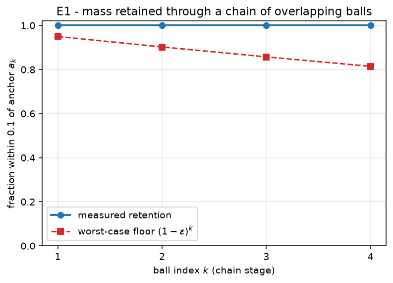
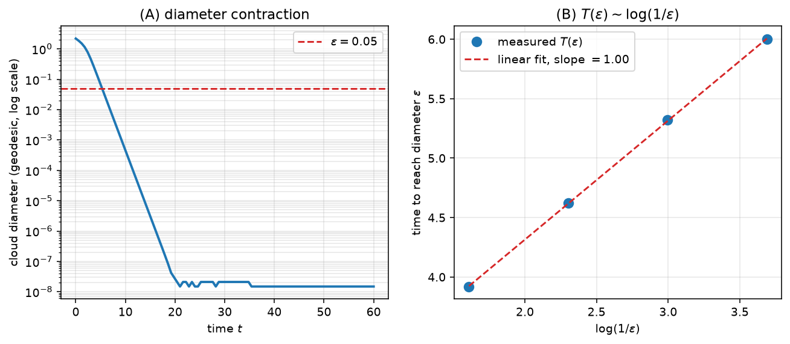
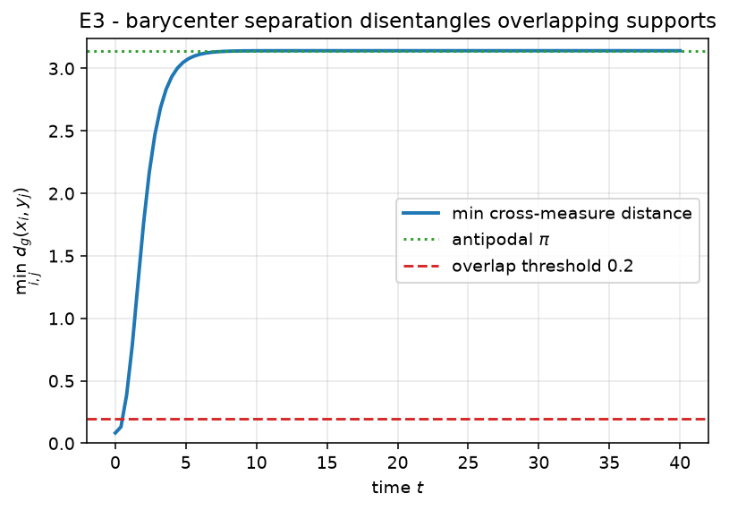
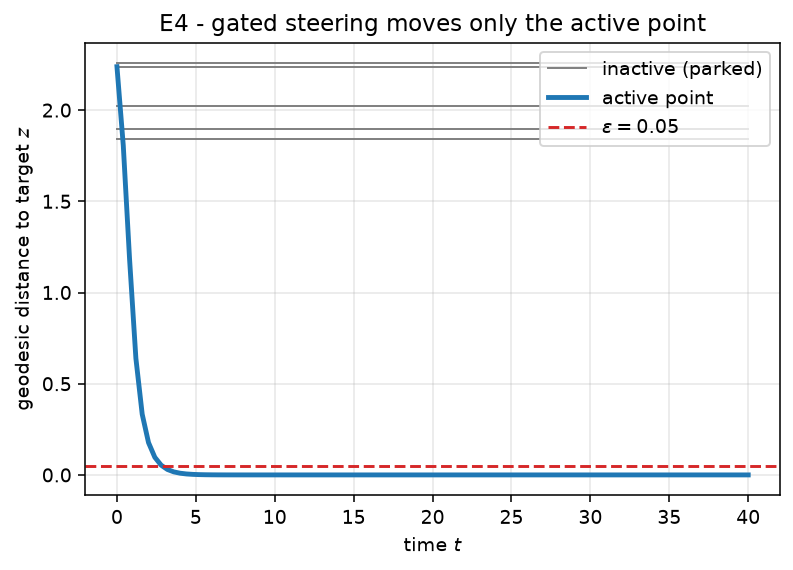
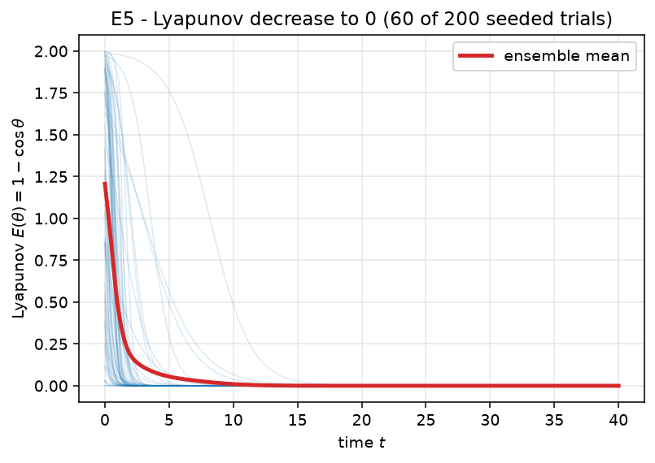
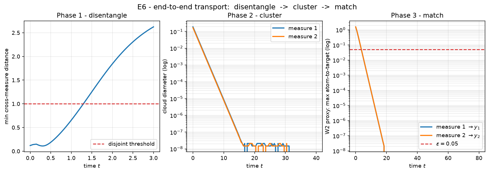
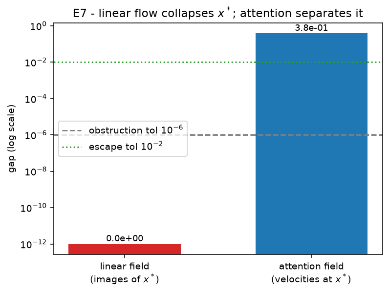

Numerical validation
Seven seeded experiments E1-E7
This page is generated from the campaign artifacts by report/build_report.py. A citable, self-contained version (with the full method listings) is available as a downloadable PDF report.
The proofs are validated alongside the formalization, not batched at the end: an optional exploratory probe shapes a hypothesis before a proof, and a seeded validation always follows it (the cycle is documented in WORKFLOW.md). All 7 experiments are deterministic (SEED = 0) and integrate the characteristic flow of the continuity equation (1.3), \(\dot x = P_x^\perp v(t,x)\) with \(P_x^\perp = I - x x^\top\), on the unit sphere. Each one is presented as hypothesis, what is tested (the cross-linked claim and pass criterion), method, results (a figure and the measured metrics), and analysis (the verdict with its provenance).
Campaign result: 7 / 7 pass.
| Experiment | Claim | Verdict |
|---|---|---|
| E1_mass_transport | claim:exp-e1-mass-transport |
PASS |
| E2_clustering | claim:exp-e2-clustering |
PASS |
| E3_disentangle | claim:exp-e3-disentangle |
PASS |
| E4_matching | claim:exp-e4-matching |
PASS |
| E5_lyapunov | claim:exp-e5-lyapunov |
PASS |
| E6_end_to_end | claim:exp-e6-end-to-end |
PASS |
| E7_linear_impossible | claim:exp-e7-linear-impossible |
PASS |
E1_mass_transport
Hypothesis
The ReLU-gated drift of Lemma B.2 concentrates a single-hemisphere measure at the ball anchor, and chaining K overlapping balls (Lemma B.1) retains at least (1-eps)^K of the mass at the final anchor a_K.
What is tested
Claim claim:exp-e1-mass-transport. It validates:
| claim | paper node | status |
|---|---|---|
leaf-gate-ode |
eq. B.4-B.5, p.32 | math.machine-checked |
leaf-ball-chain-induction |
Lem B.1 proof, p.33 | math.machine-checked |
lem-b-2 |
Lem B.2, p.31 | math.open |
lem-b-1 |
Lem B.1, p.31 | math.open |
Pass criterion. single ball: fraction in inner cap >= 1-eps=0.95; chain of K=4: fraction >= (1-eps)^K=0.8145
Method
Each stage integrates x’ = P_x^perp (cos R - <z,x>)_+ omega with R = pi/2 and omega = -z the deepest point of the active hemisphere, then measures the fraction of atoms landing within geodesic distance 0.1 of that stage’s anchor. The figure overlays the measured per-stage retention on the (1-eps)^k floor: measured retention stays near 1 while the worst-case floor decays, so the chain beats its guarantee at every stage.
Full source: experiments/E1_mass_transport/run.py.
def gated_field(z: np.ndarray, R: float, omega: np.ndarray):
cosR = np.cos(R)
def field(t, x):
gate = relu(cosR - x @ z) # shape (n,)
return gate[:, None] * omega[None, :] # shape (n, d)
return field
def single_ball(rng, d=3, t_span=30.0, n_steps=3000, n=4000):
R = np.pi / 2.0
z = normalize(rng.normal(size=d))
omega = -z # deepest point of the active region
# seed in the active region (cap around omega), away from the boundary
x0 = sample_cap(rng, omega, 0.45 * np.pi, n)
xT = integrate(gated_field(z, R, omega), x0, t_span, n_steps)
frac = float(np.mean(geodesic_distance(xT, omega[None, :]) <= 0.1))
return frac, omega
def chain(rng, K=4, d=3, t_span=30.0, n_steps=3000, n=4000):
R = np.pi / 2.0
base = normalize(rng.normal(size=d))
tangent = normalize(rng.normal(size=d))
tangent = normalize(tangent - (tangent @ base) * base)
step = 0.3 # geodesic spacing < pi/2, so stages overlap
anchors = [normalize(np.cos(k * step) * base + np.sin(k * step) * tangent) for k in range(K + 1)]
x = sample_cap(rng, anchors[0], 0.12, n) # start tightly around a_0
fracs = [] # retention measured at each waypoint a_1..a_K
for k in range(K):
omega = anchors[k + 1]
z = -omega
x = integrate(gated_field(z, R, omega), x, t_span, n_steps)
fracs.append(float(np.mean(geodesic_distance(x, omega[None, :]) <= 0.1)))
return fracs, K
def main() -> int:
rng = np.random.default_rng(SEED)
eps = 0.05
frac_single, _ = single_ball(rng)
fracs, K = chain(rng)
frac_chain = fracs[-1]
pass_single = frac_single >= 1.0 - eps
pass_chain = frac_chain >= (1.0 - eps) ** K
passed = pass_single and pass_chain
# ... figure generation and Result(...) omitted; see full source.Results

| metric | value |
|---|---|
K |
4 |
eps |
0.05 |
fraction_chain |
1 |
fraction_single_ball |
1 |
fractions_per_stage |
[1, 1, 1, 1] |
Analysis
Verdict: PASS. The measured metrics meet the pass criterion above. Provenance: seed 0, git 2053bff2f3, 2026-06-30T15:04:27 UTC, numpy 2.5.0, python 3.14.6.
E2_clustering
Hypothesis
Self-attention with B = beta I on a measure supported in an open hemisphere contracts its geodesic convex hull to a single point (Proposition 2.1); the diameter decays exponentially, so the time to reach diameter eps grows like O(log(1/eps)).
What is tested
Claim claim:exp-e2-clustering. It validates:
| claim | paper node | status |
|---|---|---|
prop-2-1 |
Prop 2.1, p.11 | math.open |
Pass criterion. diameter contracts from 2.207 to < eps=0.05; time-to-eps grows ~ log(1/eps) (positive slope)
Method
We integrate the characteristic flow x’ = P_x^perp A_Bmu and record the cloud diameter over time (panel A, log scale – a straight line is exponential decay). Panel B plots the first time the diameter drops below eps against log(1/eps) for a geometric sweep of eps; a positive-slope linear fit confirms the O(log 1/eps) rate.
Full source: experiments/E2_clustering/run.py.
def time_to_diam(field, X0, target_diam: float, t_max: float, n_steps: int) -> float:
dt = t_max / n_steps
X = normalize(X0.copy())
from common import tangential_projector_apply
def rhs(t, x):
return tangential_projector_apply(x, field(t, x))
t = 0.0
for _ in range(n_steps):
# RK4 step
k1 = rhs(t, X)
k2 = rhs(t, normalize(X + 0.5 * dt * k1))
k3 = rhs(t, normalize(X + 0.5 * dt * k2))
k4 = rhs(t, normalize(X + dt * k3))
X = normalize(X + (dt / 6.0) * (k1 + 2 * k2 + 2 * k3 + k4))
t += dt
if max_pairwise_geodesic(X) < target_diam:
return t
return t_max
def main() -> int:
rng = np.random.default_rng(SEED)
d, n = 4, 60
beta = 4.0
p = normalize(rng.normal(size=d))
X0 = sample_cap(rng, p, 0.4 * np.pi, n) # support in an open hemisphere
field = attention_ambient(beta)
init_diam = max_pairwise_geodesic(X0)
times_d, states = integrate_trace(field, X0, t_span=60.0, n_steps=4000)
diams = np.array([max_pairwise_geodesic(s) for s in states])
final_diam = float(diams[-1])
# rate check: time to reach successively smaller diameters
eps_list = [0.2, 0.1, 0.05, 0.025]
times = [time_to_diam(field, X0, e, t_max=120.0, n_steps=6000) for e in eps_list]
logs = np.log(1.0 / np.array(eps_list))
# linear fit T ~ a*log(1/eps) + b
A = np.vstack([logs, np.ones_like(logs)]).T
coef, res, *_ = np.linalg.lstsq(A, np.array(times), rcond=None)
slope = float(coef[0])
eps = 0.05
pass_contract = final_diam < eps and init_diam > 0.5
pass_rate = slope > 0.0
passed = pass_contract and pass_rate
# ... figure generation and Result(...) omitted; see full source.Results

| metric | value |
|---|---|
eps_list |
[0.2, 0.1, 0.05, 0.025] |
final_diam |
1.49e-08 |
init_diam |
2.207 |
rate_slope_vs_log |
1.001 |
times |
[3.92, 4.62, 5.32, 6] |
Analysis
Verdict: PASS. The measured metrics meet the pass criterion above. Provenance: seed 0, git 2053bff2f3, 2026-06-30T15:04:44 UTC, numpy 2.5.0, python 3.14.6.
E3_disentangle
Hypothesis
Two measures with overlapping supports but opposite-sign barycenters along alpha are driven to the antipodal clusters +alpha and -alpha by the barycenter field of Proposition 3.1 / Lemma 3.3, so their supports become disjoint.
What is tested
Claim claim:exp-e3-disentangle. It validates:
| claim | paper node | status |
|---|---|---|
prop-3-1 |
Prop 3.1, p.15 | math.open |
lem-3-3 |
Lem 3.3, p.16 | math.open |
leaf-barycenter-ode |
eq. B.9, p.33 | math.machine-checked |
leaf-barycenter-noncolinear |
Prop 3.1 induction, p.16-17 (finding F2) | math.machine-checked |
Pass criterion. two measures with overlapping supports (min cross-distance < 0.2) become disjoint (min cross-distance > 2.0) under barycenter-separation
Method
Each measure evolves under x’ = <alpha, E_mu[x]> P_x^perp alpha (its own barycenter sign). We track the minimum cross-measure geodesic distance over time: it starts near 0 (overlap) and rises toward pi (antipodal). The dashed line marks the 0.2 overlap threshold; the dotted line marks the antipodal distance pi.
Full source: experiments/E3_disentangle/run.py.
def cross_min_distance(A: np.ndarray, B: np.ndarray) -> float:
G = np.clip(A @ B.T, -1.0, 1.0)
return float(np.arccos(G).min())
def evolve_two(C1, C2, alpha, t_span, n_steps, record_every=None):
if record_every is None:
record_every = max(1, n_steps // 100)
dt = t_span / n_steps
C1 = normalize(C1.copy())
C2 = normalize(C2.copy())
def step(C):
c = float(alpha @ C.mean(axis=0)) # barycenter component <alpha, E_mu[x]>
def rhs(X):
return c * tangential_projector_apply(X, np.broadcast_to(alpha, X.shape))
k1 = rhs(C)
k2 = rhs(normalize(C + 0.5 * dt * k1))
k3 = rhs(normalize(C + 0.5 * dt * k2))
k4 = rhs(normalize(C + dt * k3))
return normalize(C + (dt / 6.0) * (k1 + 2 * k2 + 2 * k3 + k4))
times = [0.0]
cross = [cross_min_distance(C1, C2)]
t = 0.0
for stepi in range(n_steps):
C1, C2 = step(C1), step(C2)
t += dt
if (stepi + 1) % record_every == 0:
times.append(t)
cross.append(cross_min_distance(C1, C2))
return C1, C2, np.array(times), np.array(cross)
def main() -> int:
rng = np.random.default_rng(SEED)
d, n = 4, 40
alpha = np.zeros(d); alpha[0] = 1.0 # separation direction e_0
# two clouds straddling the equator: overlapping supports, opposite-sign barycenters along alpha
c1 = normalize(np.array([0.3, 1.0, 0.0, 0.0]))
c2 = normalize(np.array([-0.3, 1.0, 0.0, 0.0]))
C1 = sample_cap(rng, c1, 0.5, n)
C2 = sample_cap(rng, c2, 0.5, n)
init_cross = cross_min_distance(C1, C2)
C1T, C2T, times, cross = evolve_two(C1, C2, alpha, t_span=40.0, n_steps=3000)
final_cross = cross_min_distance(C1T, C2T)
passed = init_cross < 0.2 and final_cross > 2.0 # overlapping -> near antipodal (pi ~ 3.14)
# ... figure generation and Result(...) omitted; see full source.Results

| metric | value |
|---|---|
final_cross_min_distance |
3.142 |
init_cross_min_distance |
0.08343 |
Analysis
Verdict: PASS. The measured metrics meet the pass criterion above. Provenance: seed 0, git 2053bff2f3, 2026-06-30T15:04:45 UTC, numpy 2.5.0, python 3.14.6.
E4_matching
Hypothesis
The perceptron gate g(x) = (tau - <a,x>)_+ is identically zero on the parking cap B(a, rho) and positive outside it, so the field x’ = g(x) P_x^perp z (Proposition 4.2) drives only the active point to the target z while every parked point stays fixed.
What is tested
Claim claim:exp-e4-matching. It validates:
| claim | paper node | status |
|---|---|---|
prop-4-2 |
Prop 4.2, p.18 | math.open |
prop-4-1 |
Prop 4.1, p.18 | math.open |
leaf-sep-hyperplane |
Prop 4.2 Step 1, p.20 | math.machine-checked |
Pass criterion. inactive points stay fixed (max move < eps=0.05) and the active point reaches the target (geodesic distance < eps=0.05)
Method
M-1 inactive points are seeded inside the parking cap (gate off) and one active point outside it (gate on). We record each point’s geodesic distance to the drift target z over time: the active point’s distance falls below eps while the parked points’ distances stay flat (they never move). This is the selective-motion core of the gather / corridor / restore matching construction.
Full source: experiments/E4_matching/run.py.
def main() -> int:
rng = np.random.default_rng(SEED)
d, M = 3, 6
# parking direction and gate threshold: inactive cap is {<a,x> >= cos(rho)} i.e. near `a`
a = np.zeros(d); a[0] = 1.0
rho = 3 * np.pi / 16 # paper's parking cap radius
tau = np.cos(rho) # gate zero on B(a, rho): there <a,x> >= cos(rho) = tau? see below
# We want the gate OFF on the inactive cap around `a` and ON at the active point.
# Use gate g(x) = (tau - <a,x>)_+: zero when <a,x> >= tau (inside cap B(a,rho)), positive outside.
inactive = sample_cap(rng, a, rho * 0.8, M - 1) # parked points, gate off
z = normalize(np.array([-0.6, 0.8, 0.0])) # drift target, outside the cap
active0 = normalize(np.array([-0.2, -0.9, 0.3])) # active point, outside the cap
def field(t, X):
gate = relu(tau - X @ a) # 0 on the cap around a, >0 outside
return gate[:, None] * z[None, :]
X0 = np.vstack([inactive, active0[None, :]])
times, states = integrate_trace(field, X0, t_span=40.0, n_steps=4000)
XT = states[-1]
inactive_move = float(geodesic_distance(XT[:M - 1], X0[:M - 1]).max())
active_to_target = float(geodesic_distance(XT[M - 1][None, :], z[None, :])[0])
eps = 0.05
passed = inactive_move < eps and active_to_target < eps
# ... figure generation and Result(...) omitted; see full source.Results

| metric | value |
|---|---|
M |
6 |
active_to_target |
0 |
inactive_max_move |
0 |
Analysis
Verdict: PASS. The measured metrics meet the pass criterion above. Provenance: seed 0, git 2053bff2f3, 2026-06-30T15:04:46 UTC, numpy 2.5.0, python 3.14.6.
E5_lyapunov
Hypothesis
For the d=2 flow theta’ = -alpha sin(theta) (Example 6.1), the Lyapunov function E(theta) = 1 - cos(theta) satisfies E’(t) = -alpha sin^2(theta) <= 0, so E decreases monotonically and theta(t) -> 0 (the cluster direction) from any start in (-pi, pi).
What is tested
Claim claim:exp-e5-lyapunov. It validates:
| claim | paper node | status |
|---|---|---|
leaf-lyapunov |
Example 6.1, p.29 | math.machine-checked |
Pass criterion. E=1-cos(theta) nonincreasing (max step increase <= 1e-09) and theta(T) -> 0 (|theta(T)| <= 0.001) over 200 seeded trials
Method
We integrate the angle ODE from 200 seeded (alpha, theta0) pairs and form E = 1 - cos(theta) along each trajectory. The figure overlays a subsample of E(t) curves (all monotonically decreasing) with the ensemble mean. The verdict checks that no step increases E beyond RK4 round-off and that every trajectory converges to 0.
Full source: experiments/E5_lyapunov/run.py.
def simulate(alpha: float, theta0: float, t_span: float, n_steps: int) -> np.ndarray:
dt = t_span / n_steps
thetas = np.empty(n_steps + 1)
thetas[0] = theta0
th = theta0
f = lambda t: -alpha * np.sin(t)
for k in range(n_steps):
k1 = f(th)
k2 = f(th + 0.5 * dt * k1)
k3 = f(th + 0.5 * dt * k2)
k4 = f(th + dt * k3)
th = th + (dt / 6.0) * (k1 + 2 * k2 + 2 * k3 + k4)
thetas[k + 1] = th
return thetas
def main() -> int:
rng = np.random.default_rng(SEED)
n_trials = 200
t_span, n_steps = 40.0, 4000
max_increase = 0.0 # largest positive jump in E along any trajectory
worst_final_theta = 0.0 # largest |theta(T)| over trials (should be ~0)
tgrid = np.linspace(0.0, t_span, n_steps + 1)
n_plot = 60 # subsample of trajectories to draw (keeps the figure legible)
E_curves = []
for i in range(n_trials):
alpha = float(rng.uniform(0.2, 3.0))
# avoid the unstable equilibrium theta = pi exactly; the basin of 0 is (-pi, pi)
theta0 = float(rng.uniform(-np.pi + 0.05, np.pi - 0.05))
thetas = simulate(alpha, theta0, t_span, n_steps)
E = 1.0 - np.cos(thetas)
dE = np.diff(E)
max_increase = max(max_increase, float(dE.max()))
worst_final_theta = max(worst_final_theta, abs(float(thetas[-1])))
if i < n_plot:
E_curves.append(E)
# tolerances: monotone decrease up to RK4 round-off; convergence to the cluster
tol_increase = 1e-9
tol_final = 1e-3
passed = (max_increase <= tol_increase) and (worst_final_theta <= tol_final)
# ... figure generation and Result(...) omitted; see full source.Results

| metric | value |
|---|---|
max_E_increase_per_step |
0 |
n_trials |
200 |
worst_final_abs_theta |
3.67e-04 |
Analysis
Verdict: PASS. The measured metrics meet the pass criterion above. Provenance: seed 0, git 2053bff2f3, 2026-06-30T15:04:48 UTC, numpy 2.5.0, python 3.14.6.
E6_end_to_end
Hypothesis
The composed map Phi_fin = match o cluster o disentangle (Theorems 1.1 / 1.2) sends two measures with overlapping supports to two distinct Dirac targets: disentangle makes the supports disjoint, cluster collapses each to a point, and match steers each point to its target.
What is tested
Claim claim:exp-e6-end-to-end. It validates:
| claim | paper node | status |
|---|---|---|
thm-1-1 |
Thm 1.1, p.5 | math.open |
thm-1-2 |
Thm 1.2, p.5 | math.open |
Pass criterion. supports disjoint after disentangle (cross-distance > 1.0) and each transported measure is within eps=0.05 of its target (W2 proxy = max atom-to-target distance)
Method
We run the three phases in sequence and record one scalar per phase over time: the minimum cross-measure distance (phase 1, must exceed 1.0 so matching is single-valued), each measure’s diameter (phase 2, contracts to a point), and the W2 proxy max-atom-to-target distance (phase 3, falls below eps). The three-panel figure shows the full pipeline; the verdict checks the phase-1 separation and both final W2 proxies.
Full source: experiments/E6_end_to_end/run.py.
def rk4_cloud(rhs, C, dt, n_steps, record_every=None):
C = normalize(C.copy())
states = [C.copy()]
for stepi in range(n_steps):
k1 = rhs(C)
k2 = rhs(normalize(C + 0.5 * dt * k1))
k3 = rhs(normalize(C + 0.5 * dt * k2))
k4 = rhs(normalize(C + dt * k3))
C = normalize(C + (dt / 6.0) * (k1 + 2 * k2 + 2 * k3 + k4))
if record_every and (stepi + 1) % record_every == 0:
states.append(C.copy())
return C, states
def disentangle(C, alpha, t_span=40.0, n_steps=3000, record_every=None):
dt = t_span / n_steps
def rhs(X):
c = float(alpha @ X.mean(axis=0))
return c * tangential_projector_apply(X, np.broadcast_to(alpha, X.shape))
return rk4_cloud(rhs, C, dt, n_steps, record_every)
def cluster(C, beta=5.0, t_span=40.0, n_steps=3000, record_every=None):
field = attention_ambient(beta)
_, states = integrate_trace(field, C, t_span, n_steps, record_every)
return states[-1], states
def match(C, target, t_span=80.0, n_steps=6000, record_every=None):
dt = t_span / n_steps
def rhs(X):
# constant tangential drift toward `target`; P_x^perp target vanishes exactly at x = target,
# so the flow converges to the target and stops there.
return tangential_projector_apply(X, np.broadcast_to(target, X.shape))
return rk4_cloud(rhs, C, dt, n_steps, record_every)
def cross_min_distance(A, B):
return float(np.arccos(np.clip(A @ B.T, -1.0, 1.0)).min())
def main() -> int:
rng = np.random.default_rng(SEED)
d, n = 4, 30
alpha = np.zeros(d); alpha[0] = 1.0
# two overlapping input clouds
C1 = sample_cap(rng, normalize(np.array([0.3, 1.0, 0.0, 0.0])), 0.5, n)
C2 = sample_cap(rng, normalize(np.array([-0.3, 1.0, 0.0, 0.0])), 0.5, n)
# two distinct Dirac targets
y1 = normalize(np.array([0.0, 0.0, 1.0, 0.0]))
y2 = normalize(np.array([0.0, 0.0, 0.0, 1.0]))
eps = 0.05
# Phase 1: disentangle (each measure under its own barycenter field), recording trajectories.
# We disentangle only until the supports are disjoint (t_span=3): the barycenter field also
# contracts each cloud toward its pole, so running it to convergence would collapse the clouds
# and leave nothing for the cluster phase. Stopping early keeps the three phases distinct.
t_dis = 3.0
C1a, st1a = disentangle(C1, alpha, t_span=t_dis, record_every=30)
C2a, st1b = disentangle(C2, alpha, t_span=t_dis, record_every=30)
sep_after_disentangle = cross_min_distance(C1a, C2a)
sep_curve = np.array([cross_min_distance(a, b) for a, b in zip(st1a, st1b)])
# Phase 2: cluster each to a point
C1b, st2a = cluster(C1a, record_every=30)
C2b, st2b = cluster(C2a, record_every=30)
diam1 = np.array([max_pairwise_geodesic(s) for s in st2a])
diam2 = np.array([max_pairwise_geodesic(s) for s in st2b])
# Phase 3: match each cluster to its target
C1c, st3a = match(C1b, y1, record_every=60)
C2c, st3b = match(C2b, y2, record_every=60)
w2_curve_1 = np.array([float(geodesic_distance(s, y1[None, :]).max()) for s in st3a])
w2_curve_2 = np.array([float(geodesic_distance(s, y2[None, :]).max()) for s in st3b])
w2_proxy_1 = float(w2_curve_1[-1])
w2_proxy_2 = float(w2_curve_2[-1])
passed = (sep_after_disentangle > 1.0) and (w2_proxy_1 < eps) and (w2_proxy_2 < eps)
# ... figure generation and Result(...) omitted; see full source.Results

| metric | value |
|---|---|
separation_after_disentangle |
2.623 |
w2_proxy_measure_1 |
0 |
w2_proxy_measure_2 |
0 |
Analysis
Verdict: PASS. The measured metrics meet the pass criterion above. Provenance: seed 0, git 2053bff2f3, 2026-06-30T15:07:54 UTC, numpy 2.5.0, python 3.14.6.
E7_linear_impossible
Hypothesis
A single measure-independent (linear) continuity equation cannot separate overlapping supports (eq. 1.7): a point x* shared by two inputs is sent to ONE image, so disjoint targets are unreachable. The measure-dependent attention field escapes this obstruction by assigning x* different velocities under the two measures.
What is tested
Claim claim:exp-e7-linear-impossible. It validates:
| claim | paper node | status |
|---|---|---|
thm-1-1 |
Thm 1.1, p.5 | math.open |
Pass criterion. linear field sends shared x* to a single image (gap ~ 0, so disjoint targets are unreachable); attention assigns x* different velocities under the two measures (gap > 0)
Method
Under a fixed drift, x* flows to a single image regardless of which measure it belongs to, so the two images coincide (gap ~ 0). Under self-attention, the velocity at x* depends on the surrounding measure, so the two velocities differ (gap > 0). The bar chart contrasts the two gaps on a log scale against the pass tolerances.
Full source: experiments/E7_linear_impossible/run.py.
def main() -> int:
rng = np.random.default_rng(SEED)
d = 3
# a point shared by both input measures
xstar = normalize(rng.normal(size=d))
# ---- obstruction: a fixed (measure-independent) tangent field ----
w = normalize(rng.normal(size=d))
def linear_field(t, X):
return np.broadcast_to(w, X.shape) # constant drift, independent of the cloud
img1 = integrate(linear_field, xstar[None, :].copy(), t_span=5.0, n_steps=1000)
img2 = integrate(linear_field, xstar[None, :].copy(), t_span=5.0, n_steps=1000)
image_gap = float(geodesic_distance(img1, img2)[0])
# ---- escape: attention velocity at x* differs between the two measures ----
beta = 4.0
cloud1 = np.vstack([xstar, sample_cap(rng, normalize(xstar + 0.3 * w), 0.3, 20)])
cloud2 = np.vstack([xstar, sample_cap(rng, normalize(xstar - 0.3 * w), 0.3, 20)])
def attn_velocity_at_xstar(cloud):
# A_B[mu](x*) with mu = empirical measure of `cloud`, then project at x*
scores = beta * (cloud @ xstar)
A = softmax(scores[None, :])[0] @ cloud
return tangential_projector_apply(xstar, A)
v1 = attn_velocity_at_xstar(cloud1)
v2 = attn_velocity_at_xstar(cloud2)
velocity_gap = float(np.linalg.norm(v1 - v2))
# obstruction confirmed when the two linear images coincide; escape when attention differs
pass_obstruction = image_gap < 1e-6
pass_escape = velocity_gap > 1e-2
passed = pass_obstruction and pass_escape
# ... figure generation and Result(...) omitted; see full source.Results

| metric | value |
|---|---|
attention_velocity_gap |
0.3807 |
linear_image_gap |
0 |
Analysis
Verdict: PASS. The measured metrics meet the pass criterion above. Provenance: seed 0, git 2053bff2f3, 2026-06-30T15:04:51 UTC, numpy 2.5.0, python 3.14.6.
Reproducibility
Every figure and number in this report regenerates from the seeded code:
cd experiments
for e in E1_mass_transport E2_clustering E3_disentangle E4_matching \
E5_lyapunov E6_end_to_end E7_linear_impossible; do
uv run python -m ${e}.run
done
cd ..
python report/build_report.py # regenerate this report's source
quarto render report/experiments.qmd # -> html + pdfEach run writes summary.json (verdict + narrative), manifest.json (provenance: git sha, UTC time, host, library versions), and the figure (*.png / *.svg). The provenance manifests record the exact commit and environment each verdict was produced under.